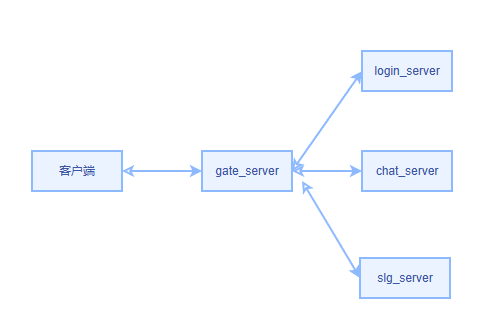

前言 项目开源地址：https://github.com/llr104/slgserver
比较适合作为go语言入门学习项目或轻量级游戏项目，整体的项目结构和编码质量还是可以的。不过距离商业项目还是差点意思，如服务负载、容灾这块还没有。
项目总共有5个类型独立服务：
gateserver 网关服
loginserver 登录服
chatserver 聊天服
httpserver http服
slgserver 游戏服
其中httpserver就是常规http服务，主要提供一些辅助操作，如账号注册、修改密码什么的。其它4类服务则是用websocket相互连接的。客户端只与网关服相连，网关服负责消息解析、前置处理，然后转发给对应的业务服处理，处理完后响应再原路返回给客户端。
下面我们就已gateserver网关服为例来分析整个项目框架，搞清楚各服务都从哪里启动、消息怎么流转的。如果你不想知道源码实现细节，可直接只看第4步结论。
1. 服务入口 go程序都是从main开始，下面是gateserver的main入口：
1 2 3 4 5 6 7 8 9 10 11 12 13 14 func main () fmt.Println(os.Getwd()) gateserver.Init() needSecret := config.File.MustBool("gateserver" , "need_secret" , false ) s := net.NewServer(getGateServerAddr(), needSecret) s.Router(gateserver.MyRouter) s.SetOnBeforeClose(controller.GHandle.OnServerConnClose) s.Start() }
接下来我们展开分析下里边具体实现细节。
2. 初始化路由 gateserver.Init()里边具体做了些什么？就只调用了下面这个方法：
1 2 3 4 5 func (this*Handle) this.init() g := r.Group("*" ).Use(middleware.ElapsedTime(), middleware.Log()) g.AddRouter("*" , this.all) }
先看里面的init，获取到了游戏服、聊天服、登录服连接地址信息。
1 2 3 4 5 func (this*Handle) this.slgProxy = config.File.MustValue("gateserver" , "slg_proxy" , "ws://127.0.0.1:8001" ) this.chatProxy = config.File.MustValue("gateserver" , "chat_proxy" , "ws://127.0.0.1:8002" ) this.loginProxy = config.File.MustValue("gateserver" , "login_proxy" , "ws://127.0.0.1:8003" ) }
接下来这句我们来看看做了什么，g := r.Group("*").Use(middleware.ElapsedTime(), middleware.Log())
首先调用路由对象Router里的Group方法，参数传的*，返回一个Group对象指针，这个Router对象是在gateserver的init.go里创建，通过上面InitRouter方法传递进来的。
1 2 3 4 5 6 7 8 9 func (this*Router) string ) *Group{ g := &Group{prefix: prefix, hMap: make (map [string ]HandlerFunc), hMapMidd: make (map [string ][]MiddlewareFunc), } this.groups = append (this.groups, g) return g }
这个方法创建了一个Group对象，然后把这个对象添加到了Router对象里groups数组里。
1 2 3 4 5 6 7 8 9 type HandlerFunc func (req *WsMsgReq, rsp *WsMsgRsp) type MiddlewareFunc func (HandlerFunc) type Group struct { prefix string hMap map [string ]HandlerFunc hMapMidd map [string ][]MiddlewareFunc middleware []MiddlewareFunc }
然后接着调用Group对象里的Use方法，传递了两个中间件函数middleware.ElapsedTime(), middleware.Log()。把这两个函数添加到了上面Group对象里的middleware数组里。
1 2 3 4 func (this* Group) this.middleware = append (this.middleware, middleware...) return this }
至此：g := r.Group(“*”).Use(middleware.ElapsedTime(), middleware.Log())干的事情就是，返回了一个Group指针对象，并对这个对象里的prefix字段和middleware字段赋了值。一个赋值字符串*，一个插入了两个中间件函数。
接下来调用g.AddRouter("*", this.all)，首先我们来看传递的参数this.all它是一个方法，参数是消息请求/响应体：
1 2 3 4 5 6 7 8 9 10 11 12 13 14 15 16 17 18 19 20 func (this*Handle) log.DefaultLog.Info("gateserver handle all begin" , zap.String("proxyStr" , req.Body.Proxy), zap.String("msgName" , req.Body.Name)) this.deal(req, rsp) if req.Body.Name == "role.enterServer" && rsp.Body.Code == constant.OK { rspObj := &proto.EnterServerRsp{} mapstructure.Decode(rsp.Body.Msg, rspObj) r := &chat_proto.LoginReq{RId: rspObj.Role.RId, NickName: rspObj.Role.NickName, Token: rspObj.Token} reqBody := &net.ReqBody{Seq: 0 , Name: "chat.login" , Msg: r, Proxy: "" } rspBody := &net.RspBody{Seq: 0 , Name: "chat.login" , Msg: r, Code: 0 } this.deal(&net.WsMsgReq{Body: reqBody, Conn:req.Conn}, &net.WsMsgRsp{Body: rspBody}) } log.DefaultLog.Info("gateserver handle all end" , zap.String("proxyStr" , req.Body.Proxy), zap.String("msgName" , req.Body.Name)) }
再来看调用的AddRouter方法：
1 2 3 4 func (this*Group) string , handlerFunc HandlerFunc, middleware ...MiddlewareFunc) { this.hMap[name] = handlerFunc this.hMapMidd[name] = middleware }
这里对于网关服，没有传递中间件函数，只传递了上面的this.all消息体函数给到了Group对象里的hMap，key=*，value=this.all;
最后，我们再来回答最开始的疑问gateserver.Init()做了什么？我们总结下：
在server/gateserver/controller/handle.go Handle对象里创建了一个Group对象指针，并给这个对象赋了值：
1 2 3 4 5 6 type Group struct { prefix string hMap map [string ]HandlerFunc hMapMidd map [string ][]MiddlewareFunc middleware []MiddlewareFunc }
然后把这个Group对象放到上面初始化传递进来的Router对象里的groups数组里了。
3. 启动服务监听 启动网关服务由下面几句代码完成：
1 2 3 4 5 6 7 needSecret := config.File.MustBool("gateserver" , "need_secret" , false ) s := net.NewServer(getGateServerAddr(), needSecret) s.Router(gateserver.MyRouter) s.SetOnBeforeClose(controller.GHandle.OnServerConnClose) s.Start()
s := net.NewServer(getGateServerAddr(), needSecret) 返回server对象，并对里边addr(网关服的ip:port)、needSecret赋值。
1 2 3 4 5 6 7 8 9 10 11 12 13 14 type server struct { addr string router *Router needSecret bool beforeClose func (WSConn) } func NewServer (addr string , needSecret bool ) s := server{ addr: addr, needSecret: needSecret, } return &s }
s.Router(gateserver.MyRouter)，就是把第二步创建的路由对象赋值给了server对象里的router字段。
1 2 3 func (this*server) this.router = router }
s.SetOnBeforeClose(controller.GHandle.OnServerConnClose)
1 2 3 func (this*server) func (WSConn) this.beforeClose = hookFunc }
把业务控制的server/gateserver/controller/handle.go Handle对象里OnServerConnClose方法赋值给了server对象的beforeClose字段，即用来在网络关闭前做些事情。即释放this.proxy，然后关闭网络。proxy是在上面all方法里的deal里赋值的，this.proxy [ip:port][cid]` = proxyClient(与业务服务连接的客户端对象)
1 2 3 4 5 6 7 8 9 10 11 12 13 14 15 16 17 18 19 20 21 func (this*Handle) c, err := conn.GetProperty("cid" ) arr := make ([]*net.ProxyClient, 0 ) if err == nil { cid := c.(int64 ) this.proxyMutex.Lock() for _, m := range this.proxys { proxy, ok := m[cid] if ok { arr = append (arr, proxy) } delete (m, cid) } this.proxyMutex.Unlock() } for _, client := range arr { client.Close() } }
至此，创建的server对象的4个数据字段都已经赋了值。
1 2 3 4 5 6 type server struct { addr string router *Router needSecret bool beforeClose func (WSConn) }
最后调用s.Start()启动服务
1 2 3 4 5 6 func (this*server) log.DefaultLog.Info("server starting" ) http.HandleFunc("/" , this.wsHandler) http.ListenAndServe(this.addr, nil ) }
我们重点看看this.wsHandler，创建websocket对象并初始化事件循环。
1 2 3 4 5 6 7 8 9 10 11 12 13 14 15 16 func (this*server) wsSocket, err := wsUpgrader.Upgrade(resp, req, nil ) if err != nil { return } conn := ConnMgr.NewConn(wsSocket, this.needSecret) log.DefaultLog.Info("client connect" , zap.String("addr" , wsSocket.RemoteAddr().String())) conn.SetRouter(this.router) conn.SetOnClose(ConnMgr.RemoveConn) conn.SetOnBeforeClose(this.beforeClose) conn.Start() conn.Handshake() }
conn.Start()，异步开启两个线程循环，分别处理消息读取和写入。
1 2 3 4 func (this *ServerConn) go this.wsReadLoop() go this.wsWriteLoop() }
先来看看接收客户端消息：
1 2 3 4 5 6 7 8 9 10 11 12 13 14 15 16 17 18 19 20 21 22 23 24 25 26 27 28 29 30 31 32 33 34 35 36 37 38 39 40 41 42 43 44 45 46 47 48 49 50 51 52 53 54 55 56 57 58 59 60 61 62 63 64 65 66 67 68 func (this *ServerConn) defer func () if err := recover (); err != nil { e := fmt.Sprintf("%v" , err) log.DefaultLog.Error("wsReadLoop error" , zap.String("err" , e)) this.Close() } }() for { _, data, err := this.wsSocket.ReadMessage() if err != nil { break } data, err = util.UnZip(data) if err != nil { log.DefaultLog.Error("wsReadLoop UnZip error" , zap.Error(err)) continue } body := &ReqBody{} if this.needSecret { if secretKey, err:= this.GetProperty("secretKey" ); err == nil { key := secretKey.(string ) d, err := util.AesCBCDecrypt(data, []byte (key), []byte (key), openssl.ZEROS_PADDING) if err != nil { log.DefaultLog.Error("AesDecrypt error" , zap.Error(err)) this.Handshake() }else { data = d } }else { log.DefaultLog.Info("secretKey not found client need handshake" , zap.Error(err)) this.Handshake() return } } if err := util.Unmarshal(data, body); err == nil { req := &WsMsgReq{Conn: this, Body: body} rsp := &WsMsgRsp{Body: &RspBody{Name: body.Name, Seq: req.Body.Seq}} if req.Body.Name == HeartbeatMsg { h := &Heartbeat{} mapstructure.Decode(body.Msg, h) h.STime = time.Now().UnixNano()/1e6 rsp.Body.Msg = h }else { if this.router != nil { this.router.Run(req, rsp) } } this.outChan <- rsp }else { log.DefaultLog.Error("wsReadLoop Unmarshal error" , zap.Error(err)) this.Handshake() } } this.Close() }
再来看看发送给客户端的响应消息，这里流程是先收到客户端请求，然后转发到对应的业务服务器，返回后再把回复消息插入通道，最后发给客户端。这里websocket是用的阻塞模式，所以消息都是这么个流程。
1 2 3 4 5 6 7 8 9 10 11 12 13 14 15 16 17 func (this *ServerConn) defer func () if err := recover (); err != nil { log.DefaultLog.Error("wsWriteLoop error" ) this.Close() } }() for { select { case msg := <- this.outChan: this.write(msg.Body) } } }
1 2 3 4 5 6 7 8 9 10 11 12 13 14 15 16 17 18 19 20 21 22 23 24 25 func (this *ServerConn) interface {}) error { data, err := util.Marshal(msg) if err == nil { if this.needSecret { if secretKey, err:= this.GetProperty("secretKey" ); err == nil { key := secretKey.(string ) data, _ = util.AesCBCEncrypt(data, []byte (key), []byte (key), openssl.ZEROS_PADDING) } } }else { log.DefaultLog.Error("wsWriteLoop Marshal body error" , zap.Error(err)) return err } if data, err := util.Zip(data); err == nil { if err := this.wsSocket.WriteMessage(websocket.BinaryMessage, data); err != nil { this.Close() return err } }else { return err } return nil }
总结一下，这一步主要做了创建websocket对象，开启监听端口和消息的读取/发送循环。
4. 客户端与网关及各业务服通信过程 如果你认真跟了前面每一步分析的话，其实整个框架的消息结构已经清晰了。
最后我们来做个总结，总体回顾下：

客户端只与网关服相连，网关服负责消息解析、前置处理，然后转发给对应的业务服处理，处理完后响应再原路返回给客户端。它们之间的连接方式都是websocket。
下面是一条完整请求响应链的流程：
客户端连接网关服，发起消息请求
网关服消息读取循环(wsReadLoop)接收到消息，解析解包后转发消息this.router.Run(req, rsp)
网关消息转发最终实际就是依次调用了middleware.ElapsedTime() , middleware.Log() , gateserver.all()
1 2 3 4 5 6 7 8 9 10 11 12 13 14 15 16 17 18 19 20 21 22 23 func (this*Group) string ) HandlerFunc { h, ok := this.hMap[name] if ok == false { h, ok = this.hMap["*" ] } if ok { for i := len (this.middleware) - 1 ; i >= 0 ; i-- { h = this.middleware[i](h) } for i := len (this.hMapMidd[name]) - 1 ; i >= 0 ; i-- { h = this.hMapMidd[name][i](h) } } return h } h(req, rsp)
gateserver.deal()将消息发送到对应的业务服务器(登录服、聊天服、游戏服)，并返回响应数据消息体
最后网关的写消息循环wsWriteLoop将响应消息发给客户端
这就是一个常规的req/resp消息的流程。
最后我们看看服务端怎么主动给客户端推送消息 ：
1 2 3 4 5 6 7 8 9 func (this *Mgr) int , msgName string , data interface {}) bool func (this *Mgr) string , data interface {})net.ConnMgr.PushByRoleId(user.rid, "chat.push" , data)